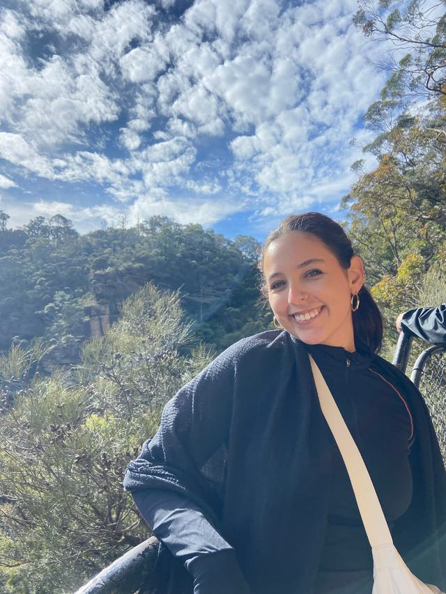
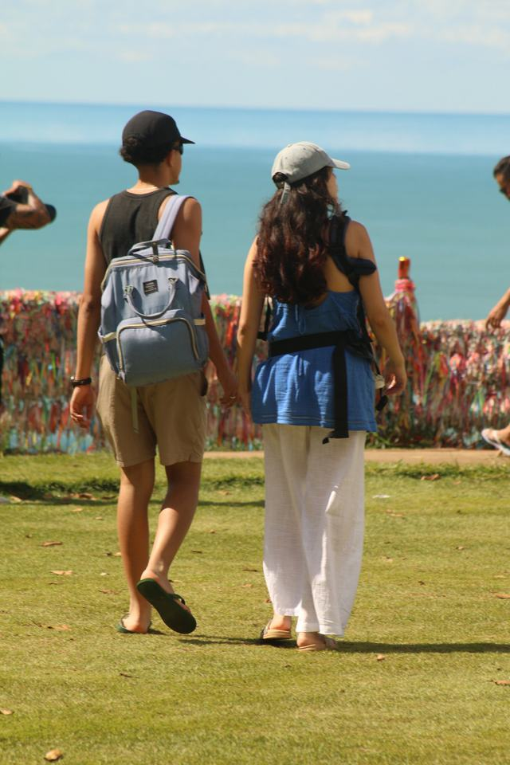
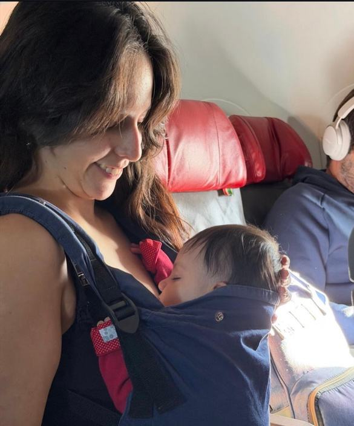

Eu sou a Salkys, tenho 22 anos, sou mãe, viajante nata (conheci +10 países) e criadora de conteúdo.
Conecto minha vida com marcas e experiências, tornando sua marca mais relevante e objeto de desejo entre o meu público.


Dados do TikTok · @Salkys_sz
Transformo viagens, maternidade e lifestyle em histórias que as pessoas param pra ver —
e comprar.
Trabalhos feitos dentro dos meus nichos
Gelateria premium em Moema que queria estar no meio das escolhas entre mães.
Casa de campo com público-alvo forte em famílias. Realizei uma campanha de divulgação para despertar desejo na locação do Airbnb.
Meu hobby me permite transmitir criatividade e publicidade através de itens de papelaria, tudo dentro deste meio.
Roteiros reais de viagem em família, mostrando na prática como é possível levar um bebê e aproveitar o destino.
UGC Creator
Conteúdos que tornam sua marca mais relevante e objeto de desejo no digital
Creative Portfolio @Salkys_ · São Paulo–SP